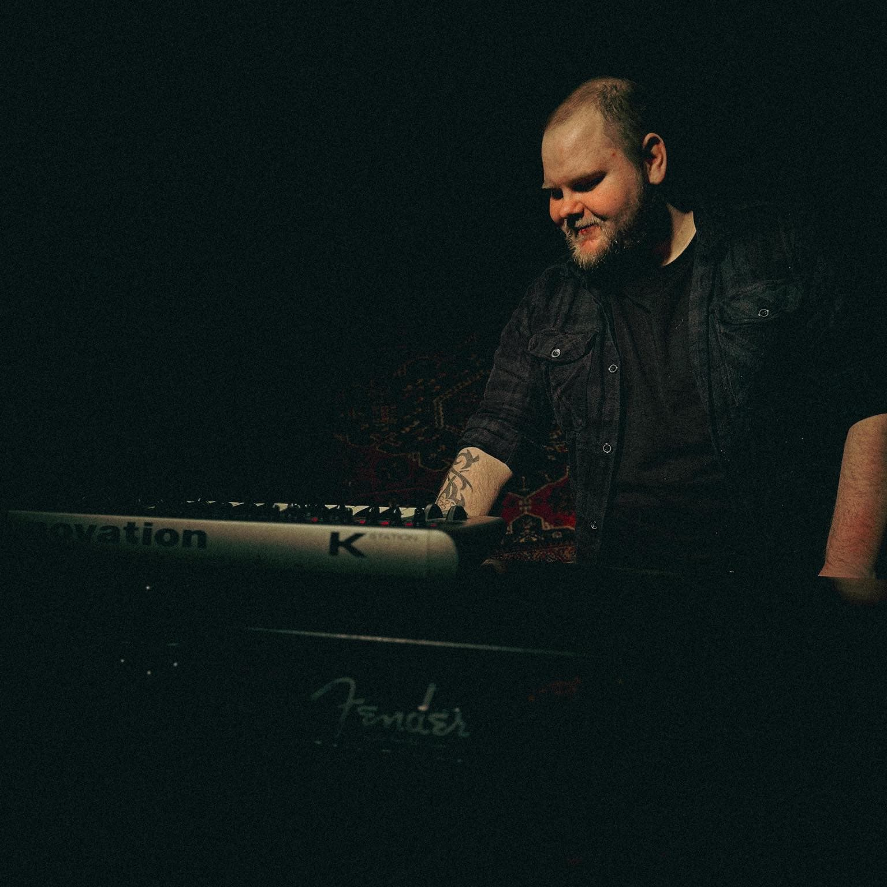

Karl-Kristian Berg
// Front-end developer & Web designer //
About
My name is Karl-Kristian Berg and I am currently studying to become a front-end developer. I have a strong passion for building websites, and have been building personal/remake websites for 5+ years as a hobby and to learn. Last year I decided to apply for front-end development at Noroff, as it made it possible to work on the side of my studies. In addition to studying I am working as a special needs teacher at the local school. Working with students with different needs taught me to think on my feet, always plan for multiple scenarios, and to break down complex problems into smaller parts. These skills are something I have found useful when writing and debugging code.
During my studies, I have found several areas of interests in web-development that I did not know of as a hobby website builder. I quickly found that accessibility is a very important area. This has led me to be aware of accessibility optimization during building. This also includes writing clean and semantic HTML for better SEO. SEO is also one of my specialties as search engines are important factors to consider when building websites.
